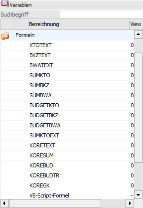

Formeln

Für nicht alle Felder im Datenstand gibt es eigene Variablen. Dafür stehen der Variablenbereich "Formeln" zur Verfügung, mit denen spezielle Werte (z.B. Kontenwerte [Soll, Haben, Saldo] oder dergleichen) ausgewertet werden können. Welche Formeln zur Verfügung stehen und wie diese verwendet werden, wird im Kapitel List - Formel Parameter beschrieben.